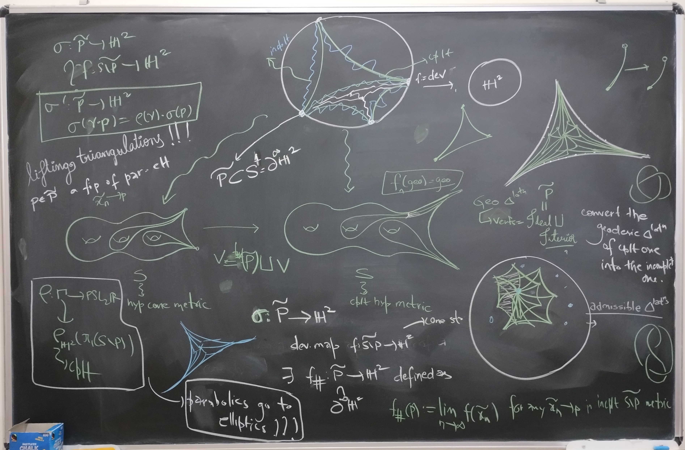
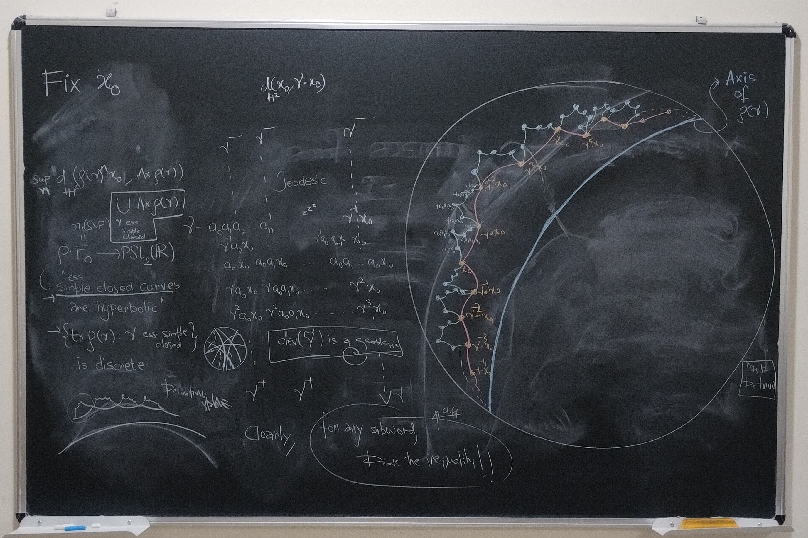
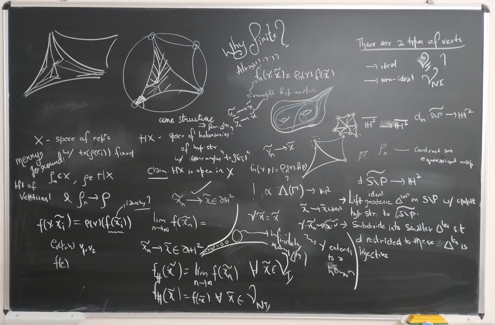

Research
Research Interests
My research interests include Lean, AI, and autoformalisation, as well as low-dimensional geometry and topology. I am currently contributing to the open-source project LeanAide, which aims to develop tools for translating mathematics written in natural language into Lean, an interactive theorem prover.
I also contribute to open-source Lean resources and metaprogramming material, including the Lean Metaprogramming Recipes cookbook. A broader record of my ongoing coding work and open-source contributions is available on my GitHub profile.
My interests in low-dimensional geometry and topology include geometric structures on surfaces, their holonomies, and the dynamics of mapping class group actions.
- Hyperbolic cone surfaces, that is, surfaces obtained by gluing hyperbolic geodesic triangles, together with their holonomies.
- Mapping class group actions on relative character varieties of punctured surface groups.
- Infinite-type surfaces and their mapping class groups.
Conferences
- Hackathon: LeanLang for Verified Autonomy at IISc Bangalore + Online, in association with Emergence India Labs. April-May 2026.
- LeanLang for Programmers (LeanLangur workshop) at IISc Bangalore, Bengaluru, India. Dec 2025.
- Lean for the Curious Mathematician at ICTS Bangalore, Bengaluru, India. Apr 2025.
- New Trends in Teichmüller Theory at ICTS Bangalore, Bengaluru, India. Feb 2025.
- Lean Together 2025, Online. Jan 2025.
- Geometry in Groups at ICTS Bangalore, Bengaluru, India. July-Aug 2024.
- Low-Dimensional Topology at IISER Pune, Pune, India. Sept 2023.
- 1,2,3: Curves, Surfaces and 3-Manifolds at Technion - Israel Institute of Technology, Haifa, Israel. May 2023.
- Ergodic Theory and Dynamical Systems at ICTS Bangalore, Bengaluru, India. Dec 2022.
Talks
- Mapping class group dynamics on $\mathrm{PSL}(2,\mathbb{C})$-character varieties, In House Student-PostDoc Symposium, IISc Bangalore. November 2025.
- The Goldman bracket characterises the homeomorphisms between non-compact surfaces (Video), World of GroupCraft IV. Sep 2024.
- When is a homotopy equivalence of a surface homotopic to a homeomorphism?, In House Student-PostDoc Symposium, IISc Bangalore. Apr 2024.
- On Three Theorems of Surface Homeomorphisms, Prime Time Seminars, IISc Bangalore. Jan 2023.
- On Three Theorems of Surface Homeomorphisms (Video), IISER Bhopal Geometry and Topology Seminars. Nov 2022.
- Conformal Bijections, Biholomorphisms and Hyperbolic Isometries, Prime Time Seminars, IISc Bangalore. Nov 2021.